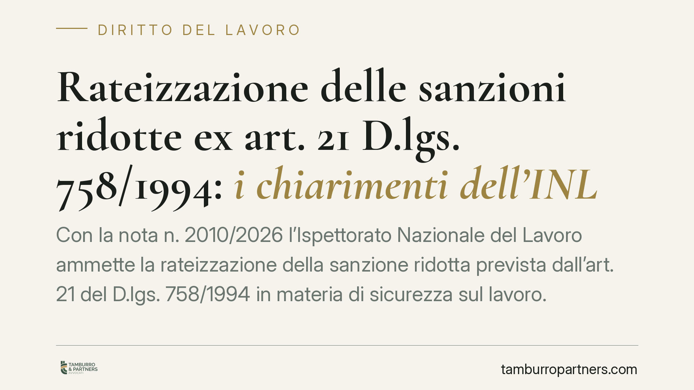

Rateizzazione delle sanzioni ridotte ex art. 21 D.lgs. 758/1994: i chiarimenti dell'INL
Con la nota n. 2010/2026 l'Ispettorato Nazionale del Lavoro ammette la rateizzazione della sanzione ridotta prevista dall'art. 21 del D.lgs. 758/1994 in materia di sicurezza sul lavoro. Il chiarimento incide sulla procedura di estinzione delle contravvenzioni: chi ha adempiuto alla prescrizione ma non riesce a versare l'intero importo in un'unica soluzione ottiene una via percorribile.

Il contesto
Le contravvenzioni in materia di igiene e sicurezza sul lavoro seguono un meccanismo particolare. Non si arriva subito alla sanzione penale: la legge prevede un percorso che consente al trasgressore di rimettere in regola la propria posizione e, così facendo, di estinguere il reato.
Questo percorso è disciplinato dagli articoli 20 e seguenti del D.lgs. 758/1994. L'organo di vigilanza, accertata la violazione, impartisce una prescrizione: un ordine di adeguamento con un termine per eliminare la fonte di rischio. Se il datore di lavoro adempie e paga una somma ridotta, il reato si estingue.
La nota n. 2010/2026 dell'INL, del 25 settembre 2026, interviene proprio sull'aspetto economico di questa procedura, chiarendo se la sanzione ridotta possa essere versata a rate.
Inquadramento normativo
L'art. 21 del D.lgs. 758/1994 stabilisce che, entro sessanta giorni dalla scadenza del termine fissato nella prescrizione, l'organo di vigilanza verifica l'adempimento. In caso positivo, ammette il contravventore a pagare in sede amministrativa una somma pari a un quarto del massimo dell'ammenda stabilita per la contravvenzione.
Il pagamento di questa somma ridotta, unito all'adempimento della prescrizione, è condizione per l'estinzione del reato ai sensi dell'art. 24 dello stesso decreto. Si tratta quindi di un passaggio non facoltativo: senza versamento, la procedura di estinzione non si perfeziona e gli atti tornano all'autorità giudiziaria.
Il testo normativo non disciplina espressamente la possibilità di frazionare l'importo. Da qui l'esigenza di un chiarimento operativo. L'INL, richiamando i principi generali in materia di riscossione delle sanzioni amministrative, ammette la rateizzazione, allineando il trattamento a quello già previsto per altre sanzioni gestite dagli organi di vigilanza.
Implicazioni pratiche
Il chiarimento ha un impatto concreto sulla gestione del rischio da parte dei datori di lavoro.
Fino a oggi il dubbio sulla rateizzabilità poteva tradursi in un problema serio: chi aveva bonificato il rischio, sostenendo i costi dell'adeguamento tecnico o organizzativo, poteva trovarsi senza liquidità sufficiente per il versamento in unica soluzione. L'impossibilità di pagare l'intero importo entro i termini avrebbe compromesso l'estinzione del reato, riportando la vicenda in ambito penale.
La nota supera questo ostacolo. Consentendo il pagamento dilazionato, l'INL evita che una difficoltà di cassa vanifichi un percorso di regolarizzazione già completato sul piano sostanziale.
Resta però un punto di attenzione. La rateizzazione riguarda le modalità di pagamento, non i presupposti dell'estinzione. L'adempimento della prescrizione e l'ammissione al pagamento restano condizioni distinte e vanno curate con rigore. La possibilità di rateizzare non attenua l'obbligo di eliminare effettivamente la fonte di rischio nei termini indicati.
Cosa fare in concreto
- Verificate i termini della prescrizione. Annotate la scadenza per l'adeguamento e quella per la successiva verifica dell'organo di vigilanza: l'estinzione dipende dal rispetto di entrambe.
- Documentate l'adempimento. Conservate prove dell'avvenuta eliminazione del rischio (interventi tecnici, comunicazioni, relazioni). Sono l'elemento su cui si fonda l'ammissione al pagamento ridotto.
- Valutate per tempo la sostenibilità finanziaria. Se prevedete difficoltà a versare l'intero importo, presentate richiesta di rateizzazione all'organo competente prima della scadenza, non dopo.
- Formalizzate ogni passaggio. Richiesta di rateizzazione, piano dei pagamenti e ricevute vanno raccolti in un fascicolo dedicato: serviranno a dimostrare la regolarità della procedura.
- Non trascurate le rate successive. Il mancato rispetto del piano concordato può riaprire la questione. Impostate scadenzari e controlli interni sui versamenti.
Conclusioni
La nota dell'INL non modifica l'impianto sanzionatorio, ma ne rende più praticabile l'uscita per chi ha già fatto la parte sostanziale del proprio dovere. La rateizzazione è uno strumento di flessibilità, non una scorciatoia: la sua utilità dipende dalla corretta gestione dell'intera procedura di prescrizione ed estinzione.
---
*Contributo informativo a cura di Tamburro & Partners - Avv. Giuseppe Tamburro. Non costituisce parere legale.*
Ogni storia di lavoro ha i suoi tempi.
Se gestisci HR e vuoi un confronto su contenzioso, ispezioni o licenziamenti, scrivi allo studio. Ti rispondiamo entro un giorno lavorativo.